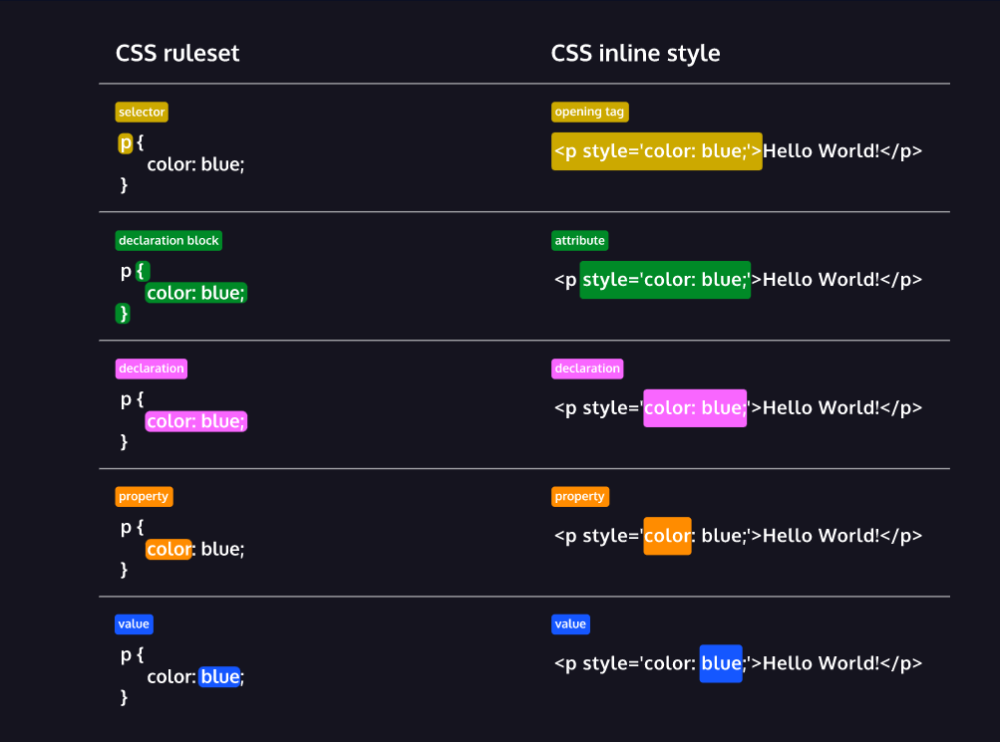

يوضح الرسم البياني أدناه طريقتين مختلفتين ، أو بناء جملة ، لكتابة كود CSS. يُظهر بناء الجملة الأول CSS مطبقًا كمجموعة قواعد ، بينما يوضح الثاني أنه مكتوب كنمط مضمّن.
لاحظ كيف أن كلا الصيغتين يحتويان على اوامر. الاوامر هي جوهر CSS. يطبقون نمطًا على العنصر المحدد. هنا ، تم تحديد العنصر في كلا الصيغتين وسيتم تصميمه لعرض النص باللون الأزرق.
في CSS هناك جزئيين أساسيين عند تعريف أي من طرق التنسيق:
1- الخاصيّة: هي اسم لنوع محدد للتنسيق. 2- القيمة: هي ما تريد تحديده لتلك الخاصيّة. مثال لتعريف خاصيّة في CSS:
نُلاحظ في المثال أعلاه أن الخاصية هي Color أو لون والقيمة هي Red أو أحمر.